Action
As Actions são os blocos fundamentais que definem o que acontece no seu jogo. Elas são disparadas pelos Triggers em resposta a eventos.
Blink Action
Faz com que o renderizador de um objeto pisque.
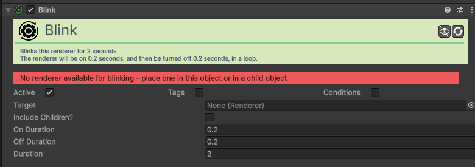
| Campo | Função | Detalhes |
|---|---|---|
| Active / Tags / Cond. | Comuns. | Ativação, etiquetas de busca e requisitos (Ex: ter a chave). |
| Target | Alvo. | O componente visual (Renderer) que irá piscar. |
| Include Children? | Filhos. | Se ativo, renderizadores nos objetos filhos também piscam. |
| On Duration | Ligado. | Tempo (segundos) visível em cada ciclo. |
| Off Duration | Desligado. | Tempo (segundos) invisível em cada ciclo. |
| Duration | Total. | Tempo total em segundos que o efeito dura. |
Change Action State Action
Ativa ou desativa outro componente de Ação.
| Campo | Função | Detalhes |
|---|---|---|
| Active / Tags / Cond. | Comuns. | Ativação, etiquetas e requisitos de execução. |
| Target | Alvo. | O componente Action alvo. |
| State | Novo Estado. | Enable, Disable ou Toggle. |
Change Collider Action
Modifica o estado do colisor (Sólido vs Trigger) ou liga/desliga o próprio componente.
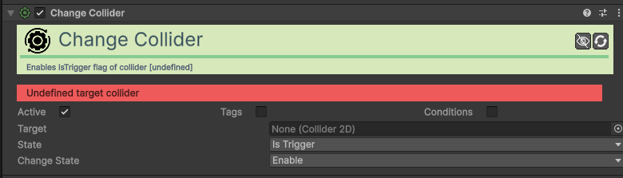
| Campo | Função | Detalhes |
|---|---|---|
| Active / Tags / Cond. | Comuns. | Ativação, etiquetas e requisitos de execução. |
| Target | Alvo. | O componente Collider2D que deseja modificar. |
| State | Propriedade. | O que alterar (ex: Is Trigger, Enabled). |
| Change State | Operação. | Como alterar: Enable, Disable ou Toggle. |
Nota: Se State for Is Trigger, Enable torna o objeto atravessável e Disable torna-o sólido.
Change Component State Action
Ativa ou desativa qualquer componente do Unity.
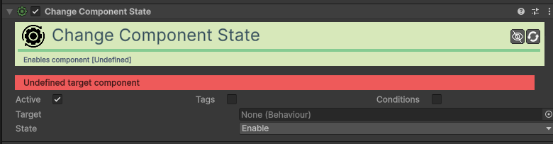
| Campo | Função | Detalhes |
|---|---|---|
| Active / Tags / Cond. | Comuns. | Ativação, etiquetas e requisitos de execução. |
| Target | Alvo. | O componente específico a ligar/desligar. |
| State | Novo Estado. | Enable, Disable ou Toggle. |
Change Movement Action
Modifica as propriedades de movimento de um objeto.
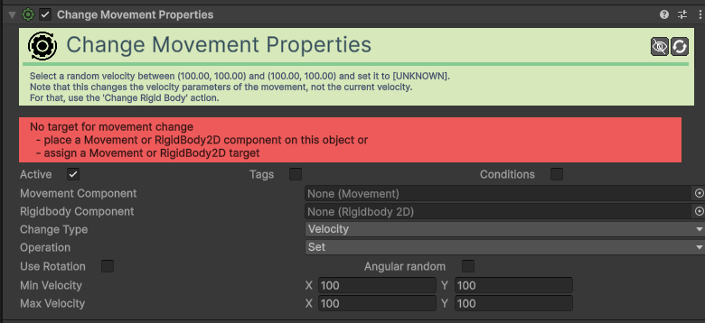
| Campo | Função | Detalhes |
|---|---|---|
| Active / Tags / Cond. | Comuns. | Definições padrão de execução e filtros. |
| Movement Comp. | Movimento. | Componente de movimento (Platformer, XY) a alterar. |
| Rigidbody Comp. | Física. | Componente Rigidbody2D a alterar. |
| Change Type | Tipo. | Atualmente focado em Velocity (parâmetros de base). |
| Operation | Operação. | Set (fixo), Add (somar), Subtract (subtrair). |
| Use Rotation | Rotação. | Se ativo, as direções são relativas ao objeto. |
| Angular random | Aleatório. | Aplica variação angular aleatória na velocidade. |
| Min Velocity | Vel. Mínima. | Valor mínimo (X, Y) para a nova velocidade. |
| Max Velocity | Vel. Máxima. | Valor máximo (X, Y). O resultado será entre Mín e Máx. |
Change Object State Action
Ativa ou desativa completamente um objeto da cena (GameObject).
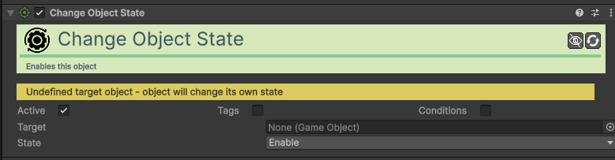
| Campo | Função | Detalhes |
|---|---|---|
| Active / Tags / Cond. | Comuns. | Ativação, etiquetas e requisitos de execução. |
| Target | Objeto Alvo. | O Game Object que deseja ligar ou desligar. |
| State | Novo Estado. | Enable (Liga), Disable (Desliga) ou Toggle. |
Change Particle System Action
Controla a emissão de partículas de um sistema.
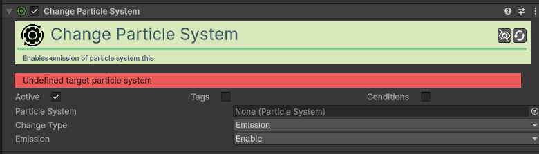
| Campo | Função | Detalhes |
|---|---|---|
| Active / Tags / Cond. | Comuns. | Ativação, etiquetas e requisitos de execução. |
| Particle System | Sistema. | O componente ParticleSystem alvo. |
| Change Type | Tipo. | Atualmente focado em Emission (Emissão). |
| Emission | Estado. | Enable (ligar), Disable (desligar) ou Toggle. |
Change Renderer Action
Modifica propriedades visuais como cor ou visibilidade do renderizador.
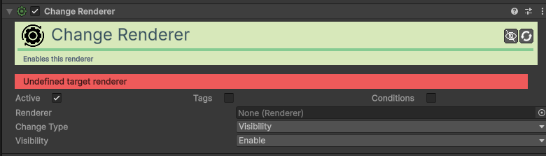
| Campo | Função | Detalhes |
|---|---|---|
| Active / Tags / Cond. | Comuns. | Ativação, etiquetas e requisitos de execução. |
| Renderer | Renderizador. | O componente visual (Sprite Renderer, etc) a modificar. |
| Change Type | Tipo. | Atualmente focado em Visibility (Visibilidade). |
| Visibility | Estado. | Enable (Torna visível), Disable (Esconde) ou Toggle. |
Change Resource Action
Altera o valor de um recurso (ex: tirar vida ou dar mana).
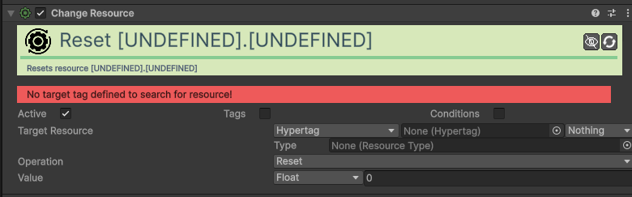
| Campo | Função | Detalhes |
|---|---|---|
| Active / Tags / Cond. | Comuns. | Definições padrão de execução. |
| Target Resource | Alvo. | Onde procurar o recurso (via Hypertag ou Objeto). |
| Type | Recurso. | O tipo de recurso (ex: Vida, Moedas). |
| Operation | Operação. | Add, Subtract, Set, Reset, Multiply, Divide. |
| Value | Valor. | Valor a aplicar (pode ser fixo ou de outra variável). |
Change Rigid Body Action
Altera propriedades físicas do Rigidbody2D (velocidade, massa, etc).
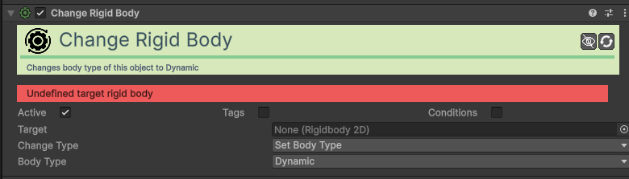
| Campo | Função | Detalhes |
|---|---|---|
| Active / Tags / Cond. | Comuns. | Ativação, etiquetas e requisitos de execução. |
| Target | Alvo. | O componente Rigidbody2D a modificar. |
| Change Type | Tipo. | Define o que alterar (ex: Set Body Type, Set Mass). |
| Value | Valor. | O novo valor ou estado a aplicar conforme o tipo escolhido. |
Change Scene Action
Carrega uma nova cena ou recarrega a atual.
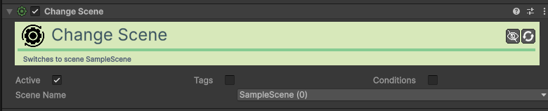
| Campo | Função | Detalhes |
|---|---|---|
| Active / Tags / Cond. | Comuns. | Ativação e condições para mudar de cena. |
| Scene Name | Nome da Cena. | O nome exato da cena a carregar. |
Change Sound Action
Altera propriedades de um som em execução ou do Sound Manager.
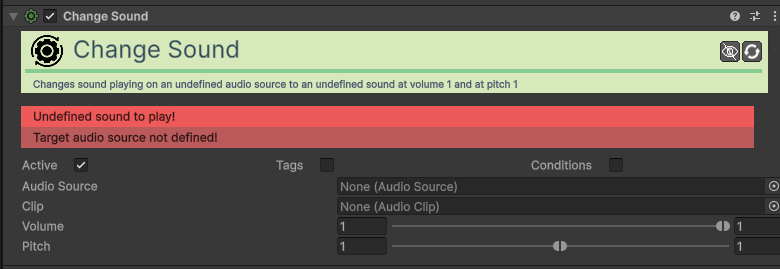
| Campo | Função | Detalhes |
|---|---|---|
| Active / Tags / Cond. | Comuns. | Ativação e requisitos de áudio. |
| Audio Source | Fonte. | O componente AudioSource que está a tocar o som. |
| Clip | Novo Som. | O ficheiro de som (AudioClip) a ser carregado. |
| Volume | Volume. | Define a intensidade do som (0 a 1). |
| Pitch | Tom. | Define a tonalidade e velocidade de reprodução. |
Change Sprite Renderer Action
Altera propriedades específicas do Sprite Renderer (ex: Flip, Sprite).
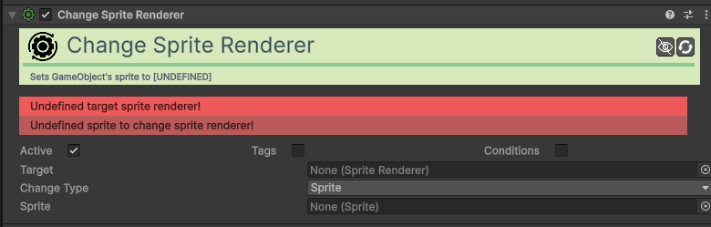
| Campo | Função | Detalhes |
|---|---|---|
| Active / Tags / Cond. | Comuns. | Ativação e etiquetas do renderizador. |
| Target | Alvo. | O Sprite Renderer a modificar. |
| Change Type | Tipo. | Sprite, Color ou Flip X/Y. |
| Sprite / Color | Novos Valores. | A imagem ou cor a aplicar conforme o modo. |
| Bool State | Estado Flip. | Liga/Desliga o flip (se no modo Flip). |
Change System Option Action
Altera definições globais do sistema de jogo (ex: Volume, Dificuldade).
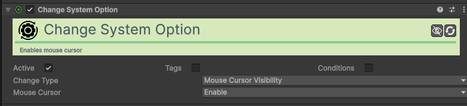
| Campo | Função | Detalhes |
|---|---|---|
| Change Type | Opção. | Atualmente focado na Visibilidade do Cursor do rato. |
| State | Estado. | Enable (Mostra o cursor), Disable (Esconde) ou Toggle. |
Change Tile Action
Altera um tile específico num Tilemap (ex: abrir porta de tiles).
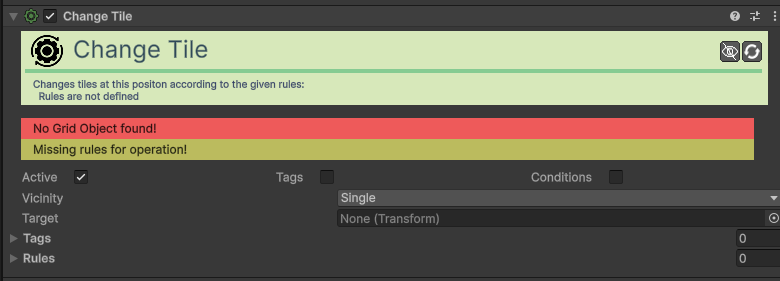
| Campo | Função | Detalhes |
|---|---|---|
| Active / Tags / Cond. | Comuns. | Ativação e requisitos para troca de tiles. |
| Tilemap | Mapa. | O componente Tilemap a modificar. |
| Vicinity Type | Área. | Single, FourWay/EightWay ou Circle. |
| Radius | Raio. | Tamanho da área afetada (no modo Circle). |
| Rules | Regras. | Lista de "Trocar Tile A por Tile B". |
Change Trail Renderer Action
Ativa ou desativa um rastro visual (Trail).
| Campo | Função | Detalhes |
|---|---|---|
| Active / Tags / Cond. | Comuns. | Ativação e etiquetas do rasto. |
| Target | Trail Renderer. | O componente de rasto alvo. |
| Emitter | Emissão. | Enable, Disable ou Toggle. |
Change Transform Action
Altera posição, rotação ou escala diretamente sem física.
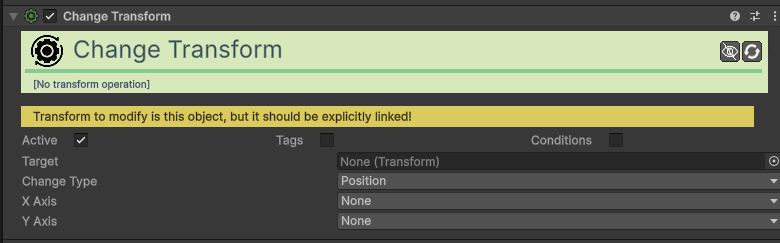
| Campo | Função | Detalhes |
|---|---|---|
| Active / Tags / Cond. | Comuns. | Ativação e condições da ação. |
| Change Type | Tipo. | Position (Posição) ou Scale (Tamanho). |
| X/Y Axis | Eixos. | Operação para cada eixo (Set, Add, etc). |
| Position / Delta | Valores. | Valores para definir ou somar (suporta aleatórios). |
| ScaleWithTime | Velocidade? | Se ativo, a alteração é feita por segundo. |
Change Trigger State Action
Ativa ou desativa um Trigger.
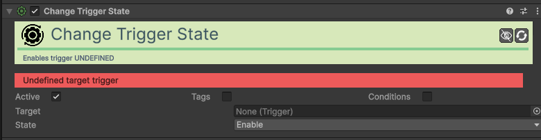
| Campo | Função | Detalhes |
|---|---|---|
| Active / Tags / Cond. | Comuns. | Ativação e requisitos do trigger. |
| Target | Trigger Alvo. | O componente Trigger a modificar. |
| State | Novo Estado. | Enable, Disable ou Toggle. |
Change Value Action
Altera o valor de uma variável local ou global.
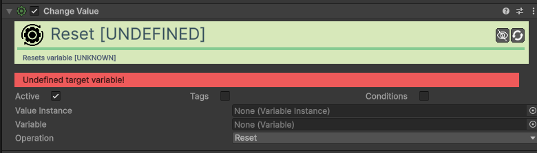
| Campo | Função | Detalhes |
|---|---|---|
| Active / Tags / Cond. | Comuns. | Ativação e requisitos do valor. |
| Value | Variável. | A variável local ou global a alterar. |
| Operation | Operação. | Set, Add, Subtract, Multiply, Divide. |
| Change Value | Valor. | O número, valor aleatório ou outra variável a aplicar. |
Dash Action
Executa um movimento rápido (dash) numa direção.
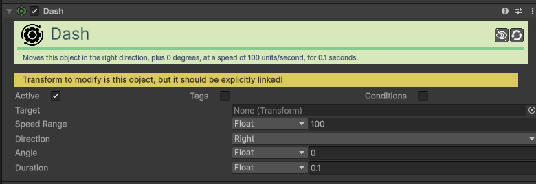
| Campo | Função | Detalhes |
|---|---|---|
| Active / Tags / Cond. | Comuns. | Ativação e requisitos do dash. |
| Speed | Velocidade. | A rapidez do movimento. |
| Duration | Duração. | Tempo em segundos do impulso. |
| Direction | Direção. | Right/Up (Global) ou Local Right/Up. |
| Angle | Ângulo. | Rotação extra à direção base. |
Destroy Object Action
Remove um objeto da cena permanentemente.
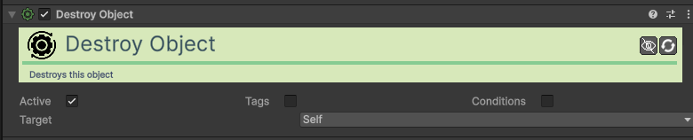
| Campo | Função | Detalhes |
|---|---|---|
| Active / Tags / Cond. | Comuns. | Ativação e requisitos de destruição. |
| Target | Alvo. | Self, Parent, Topmost, Object, Tag, Collider. |
Flash Action
Cria um efeito de flash cromático num renderizador.
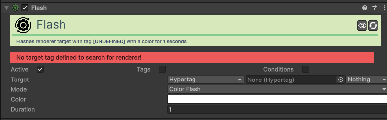
| Campo | Função | Detalhes |
|---|---|---|
| Active / Tags / Cond. | Comuns. | Ativação e condições de disparo. |
| Target | Alvo. | O componente visual a iluminar (via Hypertag ou Objeto). |
| Mode | Tipo. | Color Flash, Invert Color ou Smooth Invert. |
| Color | Cor. | A cor usada no flash (suporta gradientes). |
| Duration | Duração. | Tempo total do efeito em segundos. |
Play Particle System Action
Inicia a reprodução de um sistema de partículas existente.
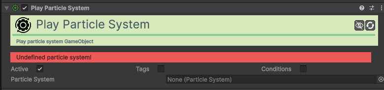
| Campo | Função | Detalhes |
|---|---|---|
| Active / Tags / Cond. | Comuns. | Ativação e etiquetas do sistema. |
| Target | Sistema. | O ParticleSystem a tocar. |
Play Sound Action
Toca um efeito sonoro (SFX).
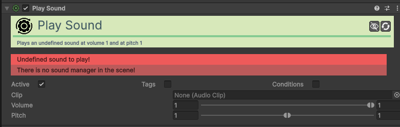
| Campo | Função | Detalhes |
|---|---|---|
| Active / Tags / Cond. | Comuns. | Ativação e condições de áudio. |
| Clip | Áudio. | O ficheiro de som (AudioClip). |
| Volume / Pitch | Ajustes. | Suporta intervalos aleatórios para variar o som (SFX). |
Quest Control (Fail/Give/Remove) Action
Gere o estado das missões (Dar, Falhar ou Remover).
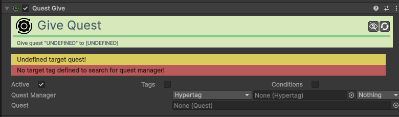
| Campo | Função | Detalhes |
|---|---|---|
| Active / Tags / Cond. | Comuns. | Ativação e condições da missão. |
| Quest Manager | Gestor. | O componente que gere as missões. |
| Quest | Missão. | O asset da missão (Quest Asset) a gerir. |
Quit Application Action
Fecha o jogo.
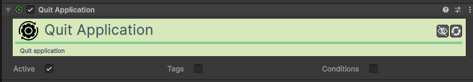
Random Action
Executa uma ação aleatória baseada em pesos.
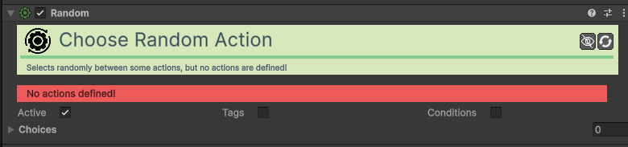
| Campo | Função | Detalhes |
|---|---|---|
| Actions | Lista de Ações. | Lista de ações possíveis para escolher. |
| Probability | Peso. | Probabilidade relativa de cada ação ser escolhida. |
Rotate Towards Action
Roda o objeto para apontar na direção de um alvo.
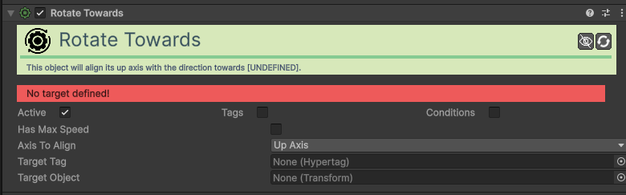
| Campo | Função | Detalhes |
|---|---|---|
| Active / Tags / Cond. | Comuns. | Ativação e condições de rotação. |
| Target Object | Alvo. | Objeto específico para onde olhar. |
| Target Tag | Tag Alvo. | Aponta para o objeto mais próximo com esta tag. |
| Axis to Align | Eixo. | Up Axis (Y) ou Right Axis (X). |
| Has Max Speed | Gradual? | Se ativo, roda suavemente. Se não, é instantâneo. |
| Speed | Velocidade. | Graus por segundo (se gradual). |
Sequence Action
Executa várias ações em série com intervalos.
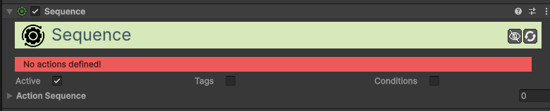
| Campo | Função | Detalhes |
|---|---|---|
| Active / Tags / Cond. | Comuns. | Ativação e condições da sequência. |
| Actions | Ações. | Sequência de ações a serem executadas. |
| Delay | Atraso. | Espera (segundos) antes de cada ação ser disparada. |
Set Animation Parameter Action
Define parâmetros no Animator do Unity.
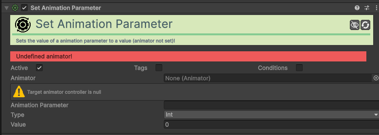
| Campo | Função | Detalhes |
|---|---|---|
| Active / Tags / Cond. | Comuns. | Ativação e condições de animação. |
| Animator | Animador. | O componente Animator alvo. |
| Parameter | Parâmetro. | Nome exato (ex: "IsDead", "Speed"). |
| Value Type | Tipo. | Int, Float, Bool, Trigger, Velocity X/Y. |
Set Outline Action
Ativa ou altera o contorno (outline) de um objeto.
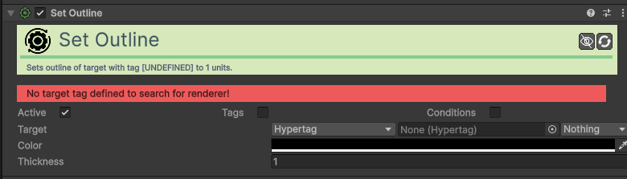
| Campo | Função | Detalhes |
|---|---|---|
| Active / Tags / Cond. | Comuns. | Ativação e etiquetas do contorno. |
| Color | Cor. | A cor da linha de contorno. |
| Thickness | Espessura. | Largura da linha (0 remove o contorno). |
Set Parent Action
Muda a hierarquia de um objeto.
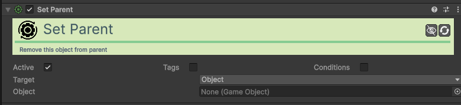
| Campo | Função | Detalhes |
|---|---|---|
| Active / Tags / Cond. | Comuns. | Ativação e requisitos de hierarquia. |
| Target Object | Objeto. | O objeto que mudará de pai. |
| New Parent | Novo Pai. | Definido por Tag ou referência direta. |
Shake Action
Cria um efeito de agitação (shake) no objeto ou câmara.
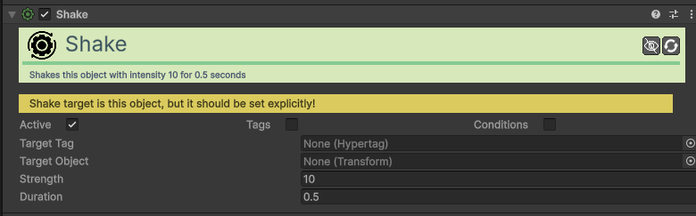
| Campo | Função | Detalhes |
|---|---|---|
| Active / Tags / Cond. | Comuns. | Ativação e requisitos do shake. |
| Object | Alvo. | O objeto a agitar (ex: "MainCamera"). |
| Strength | Força. | Intensidade da vibração. |
| Duration | Duração. | Tempo do efeito em segundos. |
Spawn Action
Cria um novo objeto (Prefab) na cena.
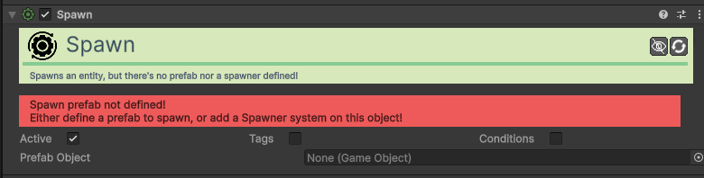
| Campo | Função | Detalhes |
|---|---|---|
| Active / Tags / Cond. | Comuns. | Ativação e requisitos de nascimento. |
| Prefab Object | Molde. | O Prefab do objeto a ser criado. |
| Spawn Position | Posição. | This, Target ou Tag. |
| Set Parent | Parentesco. | Se ativo, torna-se filho da origem. |
Run Tagged Action Action
Executa ações baseando-se em etiquetas (Hypertags).
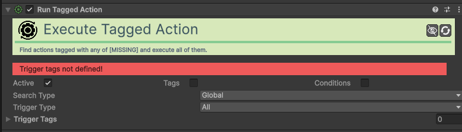
| Campo | Função | Detalhes |
|---|---|---|
| Active / Tags / Cond. | Comuns. | Ativação e requisitos da busca. |
| Search Type | Onde Buscar. | Global, Children, Tagged, Within Collider. |
| Search Tags | Tags Busca. | Tags dos objetos onde as ações estão. |
| Trigger Type | Ativação. | All, Sequence ou Random. |
| Trigger Tags | Tags Ação. | Tags das Action específicas a ativar. |
Teleport Action
Teletransporta um objeto para uma nova posição.
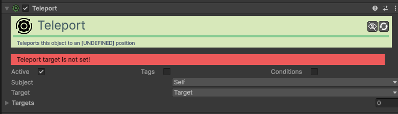
| Campo | Função | Detalhes |
|---|---|---|
| Active / Tags / Cond. | Comuns. | Ativação e requisitos de destino. |
| Subject | Quem Mover. | Self, Target, Tag, Collider. |
| Teleport Target | Destino. | Target ou Tag. |
| Target Transf. | Pontos. | Lista de pontos possíveis para o teletransporte. |
Token (Give/Remove) Action
Atribui ou retira tokens de estado/progresso.
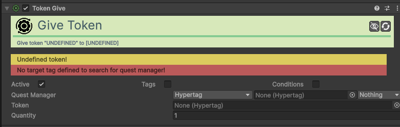
| Campo | Função | Detalhes |
|---|---|---|
| Active / Tags / Cond. | Comuns. | Ativação e requisitos do token. |
| Quest Manager | Gestor. | O componente central que guarda tokens. |
| Token | Tipo Token. | A Hypertag que representa o item. |
| Quantity | Quantidade. | Quantos tokens o jogador recebe/perde. |
Run Unity Event Action
Chama funções externas ou scripts personalizados.
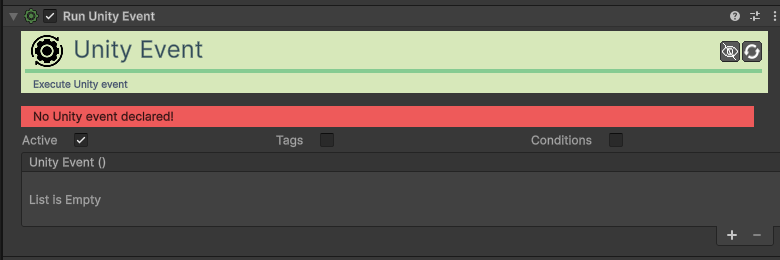
| Campo | Função | Detalhes |
|---|---|---|
| Unity Event | Evento. | Lista padrão do Unity para arrastar objetos e escolher funções. |